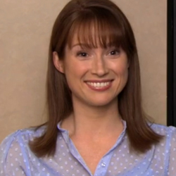

Erin Hannon
Kelly Erin Hannon (May 2, 1982)[1] is a fictional character from the U.S. comedy television series The Office. She is the office receptionist for the Scranton branch of Dunder Mifflin, a position previously held byPam Halpert before she (briefly) left the company. Erin is portrayed by Ellie Kemper. She is an original character, although her closest equivalent in the British version of the series would be Mel the receptionist, who appears briefly in The Office Christmas specials, as Dawn Tinsley's replacement.